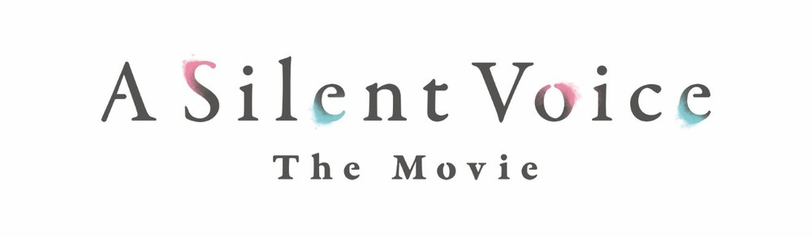
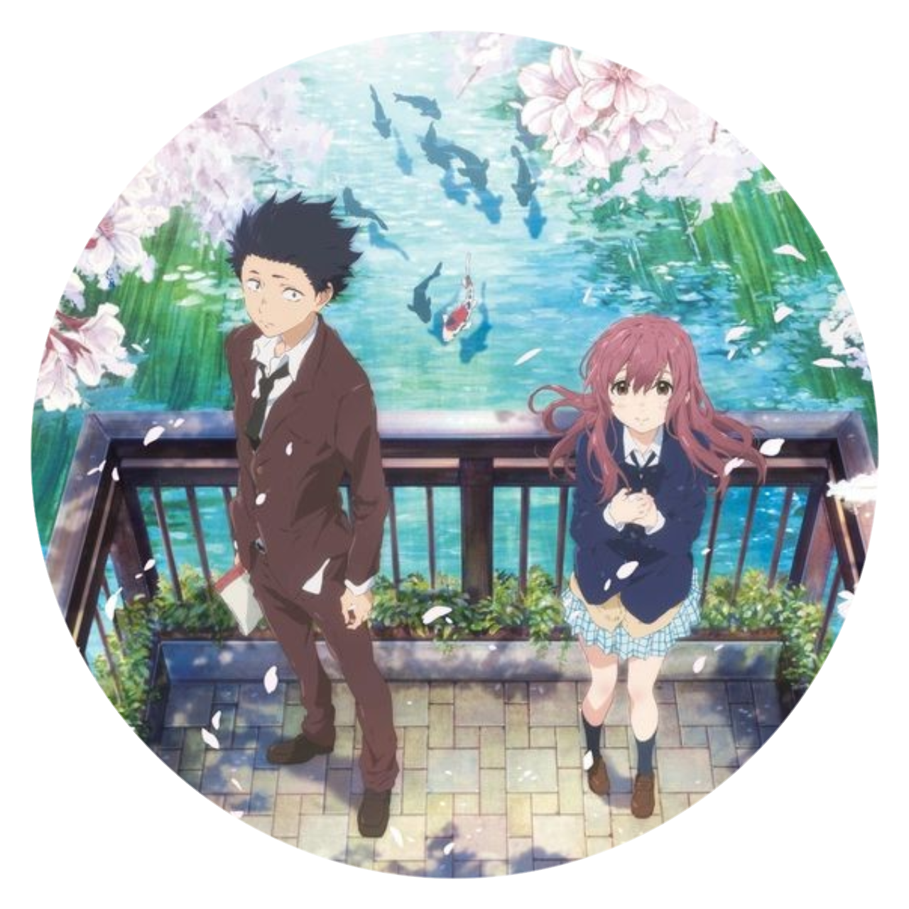

| Your Name |
I Want to Eat Your Pancreas |
| 2016 |
2018 |
| Director: Makoto Shinkai |
Director: Shin'ichirô Ushijima |


| AVATAR |
| From Academy Award winning director James Cameron comes “Avatar,” set in the year 2154, in which former Marine Jake Sully is recruited for a mission on Pandora, a distant moon where a corporate consortium is mining a rare mineral that is key to solving Earth’s energy crisis. To exist on Pandora, Jake must be reborn as an avatar, a remotely controlled biological body that can survive in the lethal air. |
After Neytiri, a female member of the Na’vi, the indigenous clan he was sent to infiltrate, saves Jake’s life, he finds himself drawn to the Na’vi’s ways. |
Soon, Jake becomes embroiled in a clash of civilizations and faces the ultimate test in a monumental battle that will decide the fate of an entire world. |


| AVATAR: THE WAY OF WATER |
| Set more than a decade after the events of the first film, “Avatar: The Way of Water” begins to tell the story of the Sully family (Jake, Neytiri, and their kids), the trouble that follows them, the lengths they go to keep each other safe, the battles they fight to stay alive, and the tragedies they endure. |
The Way of Water takes place among the underwater reefs of Pandora, we're introduced to a new tribe of people on the planet, the reef-dwellers of the Metkayina. Kate Winslet is Rona, a free-diver and part of the Metkayina tribe, and Cliff Curtis portrays Tonowari, leader of the Metkayina. |
Directed by James Cameron and produced by Cameron and Jon Landau, the film stars Zoe Saldana, Sam Worthington, Sigourney Weaver, Stephen Lang, Cliff Curtis, Joel David Moore, CCH Pounder, Edie Falco, Jemaine Clement and Kate Winslet. |


| A Silent Voice |
| Koe no Katachi (聲の形 The Shape of Voice aka A Silent Voice) is a Japanese manga series written and illustrated by Yoshitoki Oima. It involves the story of Nishimiya Shouko, a middle school student who is deaf. She transfers into a new school, where she is bullied by her classmates. |
Ishida Shouya, one of the bullies, goes to the point where she transfers to another school. As a result, he is ostracized and bullied himself, with no friends to speak of and no plans for the future. Years later, he sets himself on a path to redemption. |
This movie is one of the most touching movies ive ever seen! I would reccomend you to watch this movie atleast once in your life :) |

| Your Name |
| High school girl Mitsuha Miyamizu lives in the town of Itomori in Japan's mountainous Hida region. She is bored with the country life, and wishes to be a handsome boy in her next life. She begins switching bodies intermittently with Taki Tachibana, a high school boy in Tokyo when they wake up. |
They communicate by writing messages on paper, their phones, and sometimes on each other's skin. Mitsuha causes Taki to develop a relationship with his coworker Miki Okudera, while Taki causes Mitsuha to become popular in school. |
Two teenagers share a profound, magical connection upon discovering they are swapping bodies. Things manage to become even more complicated when the boy and girl decide to meet in person. |
| I Want to Eat Your Pancreas |
| Spring time in April and the last of the cherry blossoms are still in bloom. A usually aloof bookworm with no interest in others comes across a book in a hospital waiting room. Handwritten on the cover are the words: "Living with Dying." |
He soon discovers that it is a diary kept by his very popular and genuinely cheerful classmate, Sakura Yamauchi, who reveals to him that she is secretly suffering from a pancreatic illness and only has a limited time left. |
It is at this moment that she gains just one more person to share her secret. Trying to maintain a normal life as much as possible, Sakura is determined to live her life to the fullest until the very last day. As her free spirit and unpredictable actions throw him for a loop, his heart begins to gradually change. |